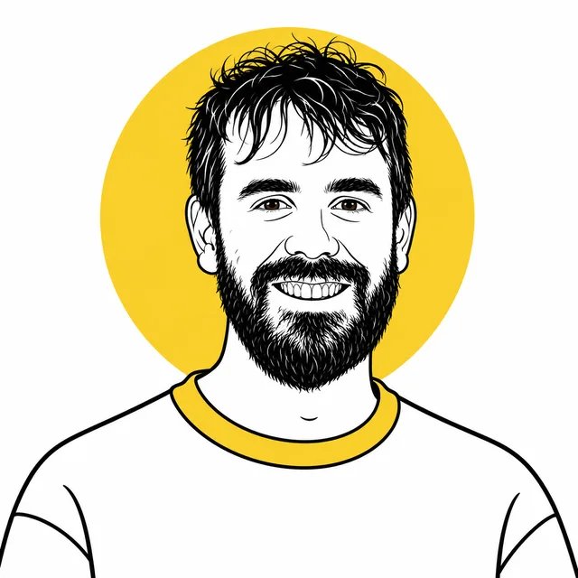
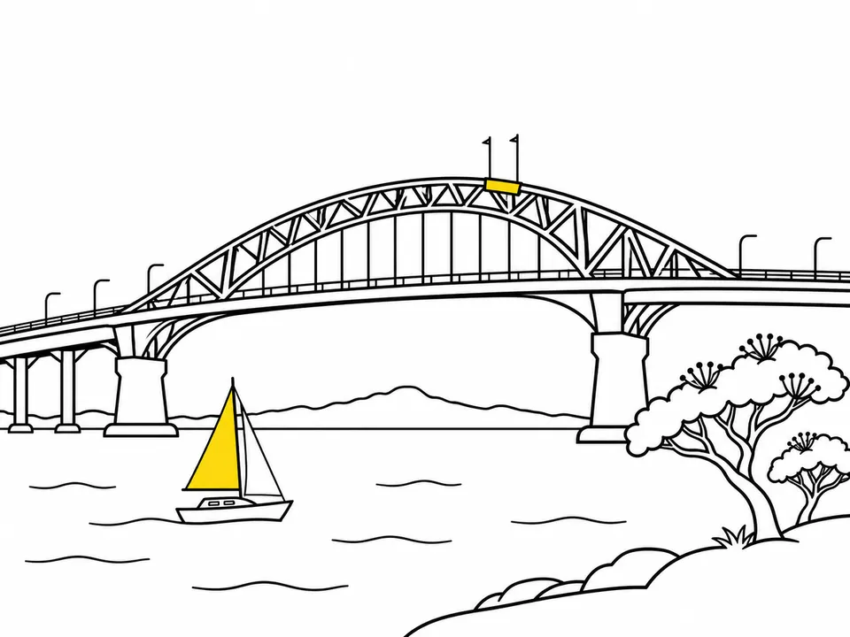

Renti
Senior software developer desde 2023
Arquitectura backend, integraciones y la app Flutter que usan los inquilinos.

Hola, soy Leandro. Hago que los sistemas hablen entre sí.Ingeniero de software senior y tech lead en Auckland. Explora el mapa.
Estudié Ciencias de la Computación en la Universidad de Buenos Aires y pasé mis primeros años construyendo mapas, sistemas de depósitos y las conexiones entre ellos.



Software de logística en Sandfield, software de alquileres en Renti y ahora Poplar Labs, un estudio propio.
Senior software developer desde 2023
Arquitectura backend, integraciones y la app Flutter que usan los inquilinos.

Fundador y director
Un pequeño estudio de ingeniería que estoy armando en Auckland, para empresas cuyas herramientas deberían trabajar juntas.
Technology. Grounded.